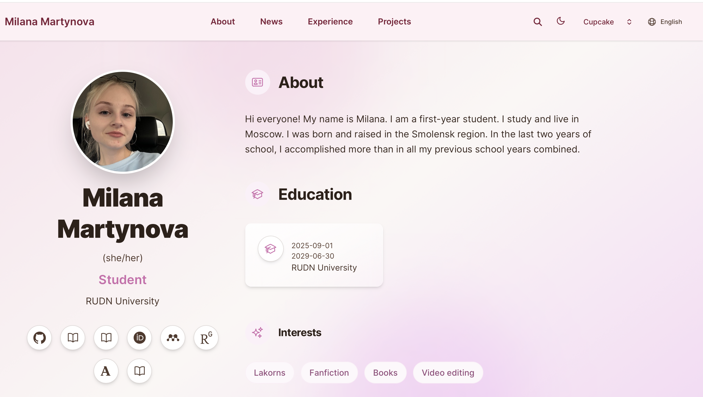
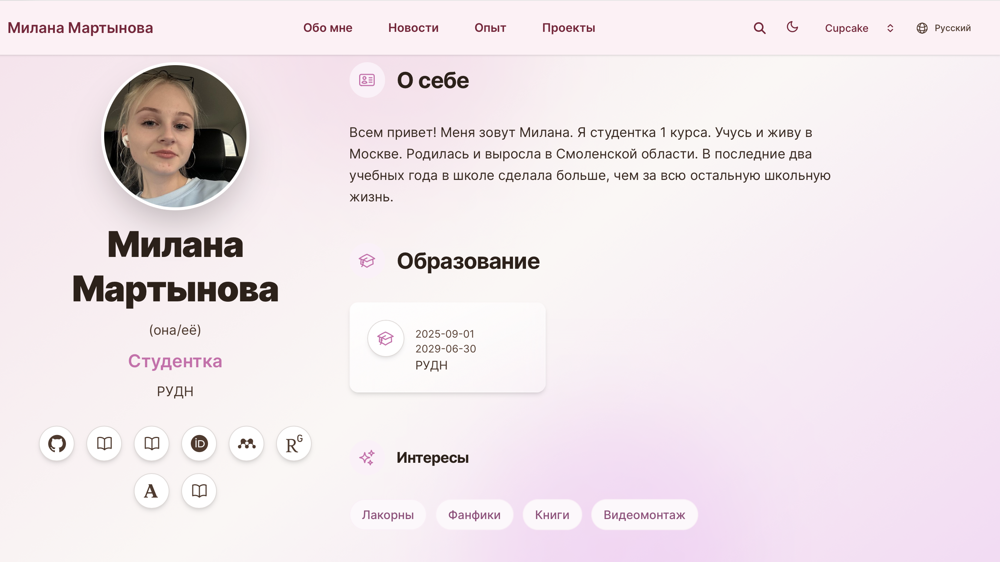
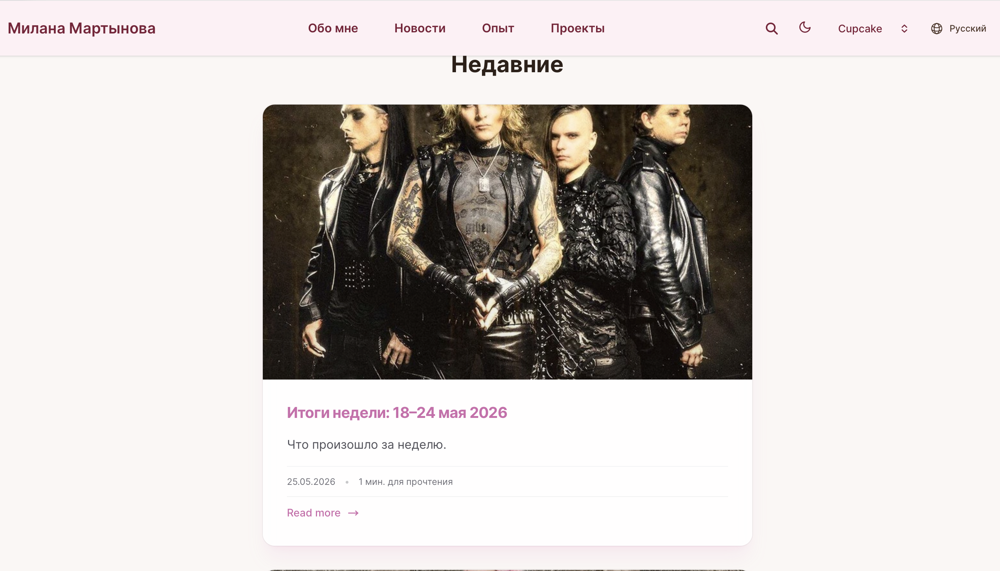
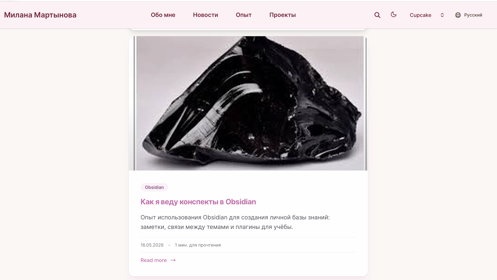

Информация
Докладчик
- Мартынова Милана Александровна
- Студент НКАбд-04-25
- Российский университет дружбы народов
- 1032253522@rudn.ru
1. Цель работы
Продолжить работу с сайтом, добавить переключение языка и два новых
поста
2. Задание
- Сделать поддержку английского и русского языков.
- Разместить элементы сайта на обоих языках.
- Разместить контент на обоих языках.
- Сделать пост по прошедшей неделе.
- Добавить пост на тему по выбору (на двух языках).
3. Выполнение лабораторной
работы
Проверяю изменения на сайте:
Английский язык (рис. 1)

Английский язык
Русский язык (рис. 2)

Русский язык
Проверяю добавление поста о прошедшей неделе. (рис. 3)

Пост про неделю
Проверяю добавление поста про Obsidian. (рис. 4)

Пост про Obsidian
4. Выводы
Мы закончили работу с сайтом, добавили переключение языков.